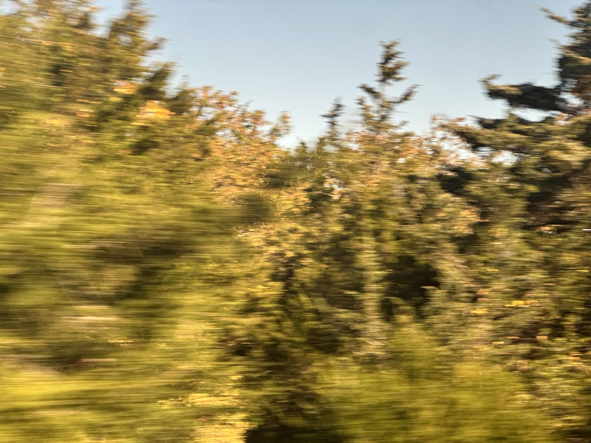
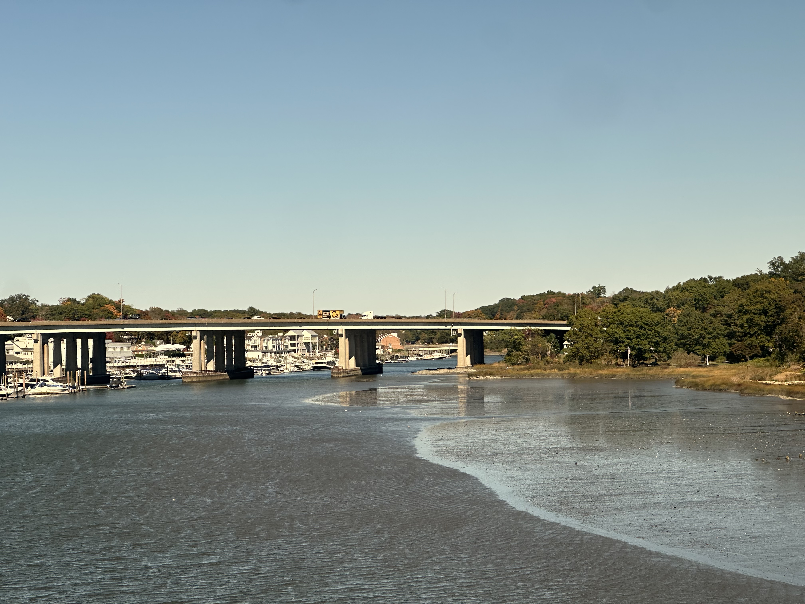

Summercaught
oct 17 2025

I am unsure when I fell in such love with the world. There were signs, tomatoes and california fog and redwoods bigger than cars and sleeping on the sand, no socks no hat. Now I know the waves by name, now I do not photograph magnolias in April because I think they wouldnt like it, now I have counted each star three times over. I eagerly await moments like long rain on a Sunday or that first sunset you realize oh this is a winter night, this is different.
It was a year ago, two maybe. Realizations such as: you’re growing up, the years will speed by faster and faster, try being happy, you can count how many springtimes you have left and i'll tell you, it's less than a hundred, led me to pursue serious matters. Serious matters are like sweating til you die on hot days, like leaves and olive oil and a great cloud in the sky. Like unmatted junegrass and fables and Mom shutting the door and saying You map that backyard bakery ten times forward. Like kiwistained rugs on a big patio and a hundred thousand dogs and one inch of chalk. This legibility is glorious and booming, like mirror unbending consideration or superhero pierced birdsong. I see summercaught sailfighting maple seeds floating by four pm rainstreams and Clarendon italicized quartz-white asters beaming brightly into sedentary skies.
These extremely serious matters, say, tangled shadows from falling fabric, a final drop of sunlight in the valley, the visible breath of a boy racing through the schoolyard parking lot, are important to the spirit. Passing through the tree house house tree lake bridge tree warehouse factory tree tree tree house of it all, one is suddenly not tricked by fools gold. Every moment of commonplace glory I worry, will I lose this love, and I google, How do i not become jaded reddit? Whatever.
I hope to continue peering out thursday traincar windows forever.
 